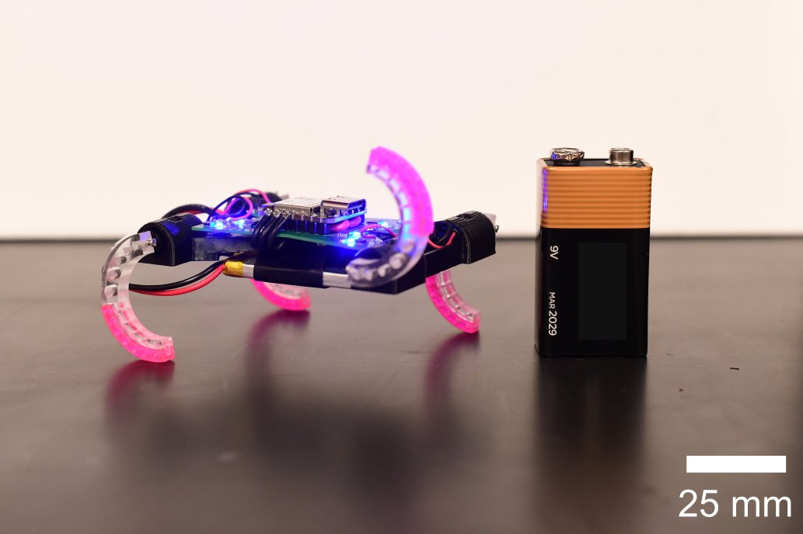

Current-based proprioception · Small-scale locomotion
Lil-Quad
Small legged robots could search collapsed buildings or inspect tight spaces, but at the centimeter scale most of them run open-loop, because there is little room for sensors. My project, Lil-Quad, set out to give a robot this small real feedback by using the one signal every motor already produces: its current. I designed and built an untethered, RHex-inspired quadruped about the height of a 9-volt battery. It has an FDM-printed ABS torso, SLA-printed legs that combine rigid and compliant materials, and a custom PCB with a microcontroller, motor drivers and current sensors. From those current signals, a neural network I trained detects when each leg touches down and lifts off, so the robot senses ground contact without encoders or foot sensors. I'm now building on that sensing to make the gait more stable. That means refining the PD controller, redesigning the legs to keep the front feet on the ground, and exploring learning-based control.